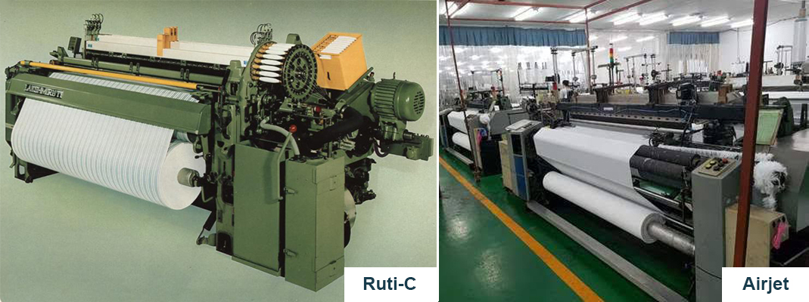
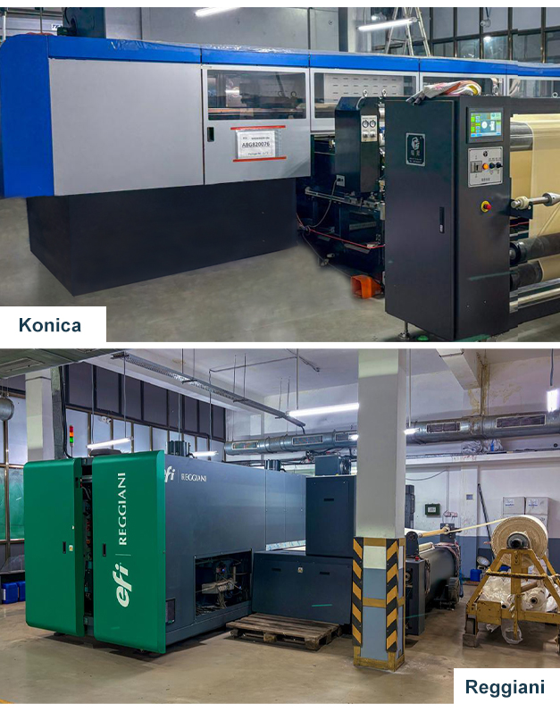

Weaving
- Our weaving facilities are equiped with
- High-speed shuttle less looms such as Airjet,Rapier and Projectile looms Designed for the efficient production of woven fabrics across various blends and construction, real-time monitoring and quality assurance protocals.
-
Shuttle loom weaving facility with upgraded dobby Ruti-C looms to cater weaving of fine count High-twist Cotton Voiles.

Processing & Digital Printing
- At SPID, we specialize in producing premium quality fabrics tailored for the global export market. Our commitment to excellence is backed by robust backward integrations and cutting-edge processing facilities.
- State-of-the-Art Fabric Processing Includes:
- Bleaching & Dyeing Capacity: Up to 1 Lakh meters per month.
- Versatile Processing Setup: Continuous and non-continuous bleaching and dyeing units, enabling us to efficiently manage both large-scale and short-run production
- Advanced Digital Printing & Finishing: Cutting-edge technology delivering exceptional design clarity and lasting fabric durability.
- High-resolution printing with intricate patterns, offering maximum flexibility and limitless color combinations.
- Our Konica Minolta 72-head machine bring unparalleled vibrancy and precision, ensuring customer satisfaction and delight in the world of fashion.
- Technical Excellence
- Our in-house laboratory is equipped with the latest testing machines to assess fabric quality across all critical parameters.
- We strictly adhere to international standards in all technical testing and quality control protocols.
- Sustainability Commitment
- We are dedicated to keeping our environment clean and green through responsible and eco-friendly practices across all operations.
Inspection & Packing
- We prioritize quality assurance through rigorous inspection and packing processes tailored to meet our customer's specific needs.
- We utilize advanced inspection machines capable of operating under 4-point grading system, as per customer requirements.
- Our facility is fully equipped with rolling and lapping machines to ensure precision in fabric handling and packaging.
- As part of our internal quality protocol, we audit 10% of fabric from every lot ready for dispatch, reinforcing our commitment to delivering consistent and reliable quality.